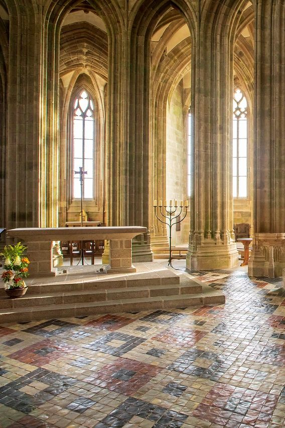
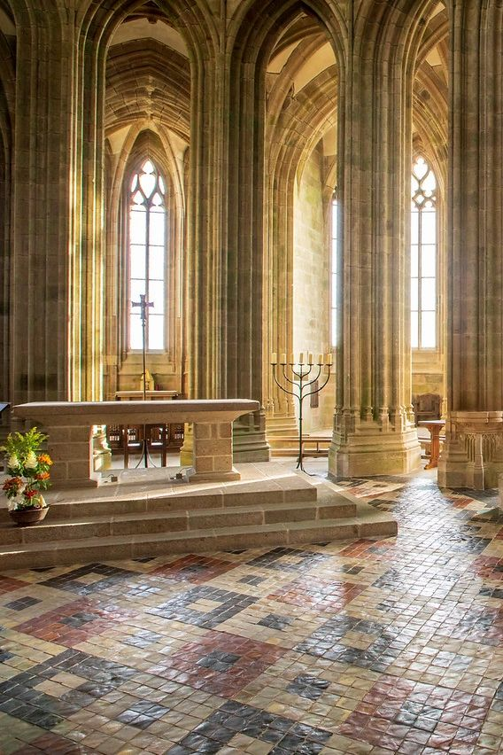
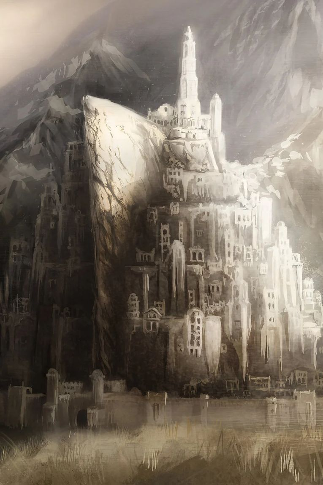
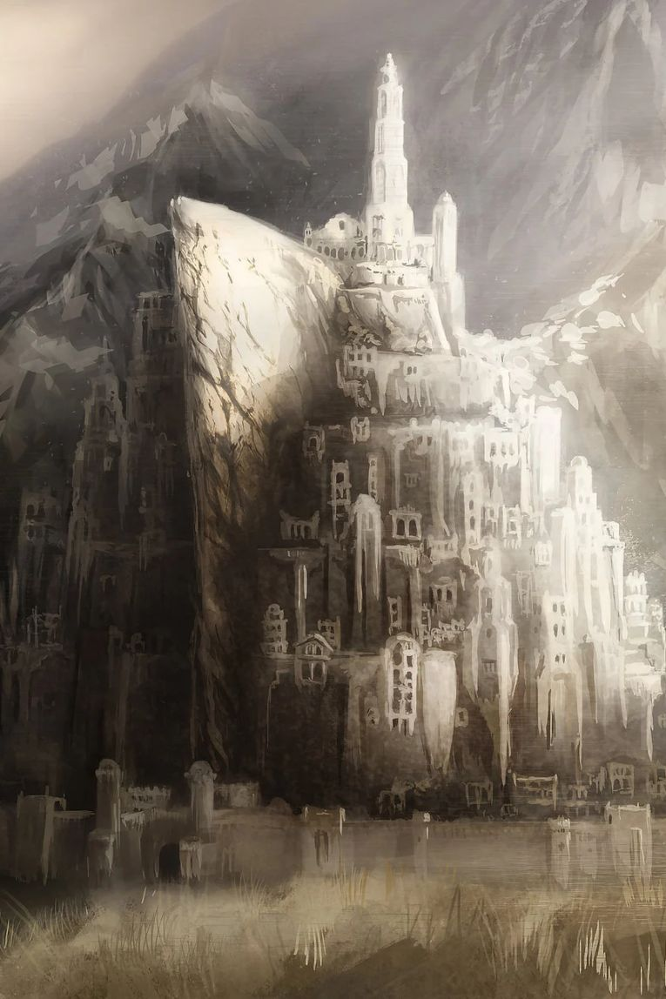

=======

=======
Galeria de imagenes del Mount Saint-Michel
Construcción
Sabias que el Mont Saint Michel fue construido a lo largo de 1300 años?
Haz click para leer mas
La idea surgió de un sueño
Esta maravilla arquitectónica se concibió en un sueño.
Haz click para leer mas
La estructura arquitectónica representa la jerarquía feudal
Dios está en la cima, seguido de la abadía
Haz click para leer mas
Los ingleses nunca pudieron conquistarlo
La abadía resistió un asedio de treinta años, su fuerte defensa contra Inglaterra inspiró a Juana de Arco.
Haz click para leer mas
Mont Saint Michel fue también una prisión
La abadía albergó a algunos de los principales presos políticos de la Revolución Francesa del siglo XVIII
Haz click para leer mas
Es un lugar de peregrinación muy importante
Sin el puente que interconectaba el continente y la isla, era una aventura arriesgada cruzar la bahía, ya que también había muchos depósitos de arenas movedizas en la zona.
Haz click para leer mas
 

Mont Saint Michel tiene una réplica
Mont Saint Michel de Penzance, que está situada en el lado inglés del canal.
Haz click para leer mas
Ha inspirado muchos de los castillos que vemos en las películas
Desde Enredados hasta Minas Tirith, revisa los castillos que se inspiraron en la abadia
Haz click para leer mas
Hogar de las mayores mareas de Europa
Sabias que la marea de la abadía puede llegar hasta los 14 metros?
Haz click para leer mas
Patrimonio de UNESCO
Mont Saint Michel y la bahía están inscritos en el Patrimonio Mundial de UNESCO desde 1979.
Haz click para leer mas
Du Guesclin
Con una hermosa vista panorámica de la bahía y una decoración clásica, uno de los mejores ambientes aqui.
Haz click para leer mas
Camping le Balcon de la Baie
Situado entre la bahía de Mont Saint Michel y Saint-Malo, el Camping le Balcon de la Baie está a 10 minutos en coche del mar.
Haz click para leer mas
La abadía de Mont Saint Michel, situada en un islote que queda aislado del continente durante las mareas altas, comenzó a levantarse en el año 708 y fue construida por 1300 años por varias generaciones de obreros que trabajaron y sobrevivieron en este inhóspito lugar.
El obispo Aubert de Avranches fue visitado en sueños por el arcángel Miguel. El Arcángel le ordenó que construyera una iglesia en la isla rocosa situada en la desembocadura del río Couesnon. El obispo no hizo caso a sus palabras la primera vez, así que el arcángel le visitó de nuevo. Fue luego de esta segunda visita que el obispo le tomó en serio y comenzó la construcción en el lugar.
La construcción de Mont Saint Michael representa la jerarquía feudal vigente en la época. Dios está, por supuesto, en la cima seguido de la abadía y el monasterio. Debajo se encuentran las grandes salas, luego los almacenes y las viviendas y, en la parte inferior, casi fuera de las murallas, se sitúan las viviendas de los pescadores y de los agricultores.
Las fuertes fortificaciones y las altas mareas hicieron imposible que los ingleses conquistaran Mont Saint Michel durante la Guerra de los Cien Años. La abadía resistió un asedio de treinta años y su fuerte defensa contra Inglaterra inspiró también a Juana de Arco.
El uso de la abadía sufrió un cambio durante la Revolución Francesa en el siglo XVIII, cuando apenas quedaban monjes. La abadía albergó a algunos de los principales presos políticos de la Revolución, pero, gracias a que muchas personas influyentes hicieron campaña para preservar el patrimonio arquitectónico, en 1863 la prisión fue cerrada.
Mont Saint Michel es conocido por ser un destino turístico, pero también es un lugar de peregrinación muy importante. Desde el siglo X, muchos peregrinos acudían a la abadía atravesando rutas peligrosas y las arenas que cubren la bahía en marea baja. Sin el puente que interconectaba el continente y la isla, era una aventura arriesgada cruzar la bahía, ya que también había muchos depósitos de arenas movedizas en la zona.
Guillermo el Conquistador, duque de Normandía, creó una réplica de Mont Saint Michel que se llamó Mont Saint Michel de Penzance y que está situada en el lado inglés del canal. Esta réplica es mucho más pequeña y también está situada en una isla mareal.
El icónico castillo de la película de animación Enredados se inspiró en Mont Saint Michel. También fue la inspiración para Minas Tirith, la capital de Gondor en El Señor de los Anillos.
Las mareas de Mont Saint Michel alcanzan casi 14 metros, siendo las más altas de Europa. En los primeros tiempos, nadie podía cruzar durante las mareas altas y la única forma de acceder a la isla era una calzada de mareas. En los últimos tiempos, se ha construido un camino más estable para facilitar los desplazamientos en todo momento.
Mont Saint Michel y la bahía que lo rodea están inscritos en el Patrimonio Mundial de la UNESCO desde 1979.
Si buscas cocina local y especialidades regionales, el Hotel Du Guesclin es el lugar que debes visitar. Con una hermosa vista panorámica de la bahía circundante y una decoración blanca clásica, este restaurante tiene uno de los mejores ambientes de esta pequeña isla medieval. Dispone de tres menús que se adaptan a todos los gustos y presupuestos.
Situado entre la bahía de Mont Saint Michel y Saint-Malo, el Camping le Balcon de la Baie está a 10 minutos en coche del mar. El establecimiento ofrece un entorno de casas móviles rodeadas de frondosos árboles, una piscina climatizada y un parque infantil. Es la escapada perfecta del ajetreo de la ciudad.